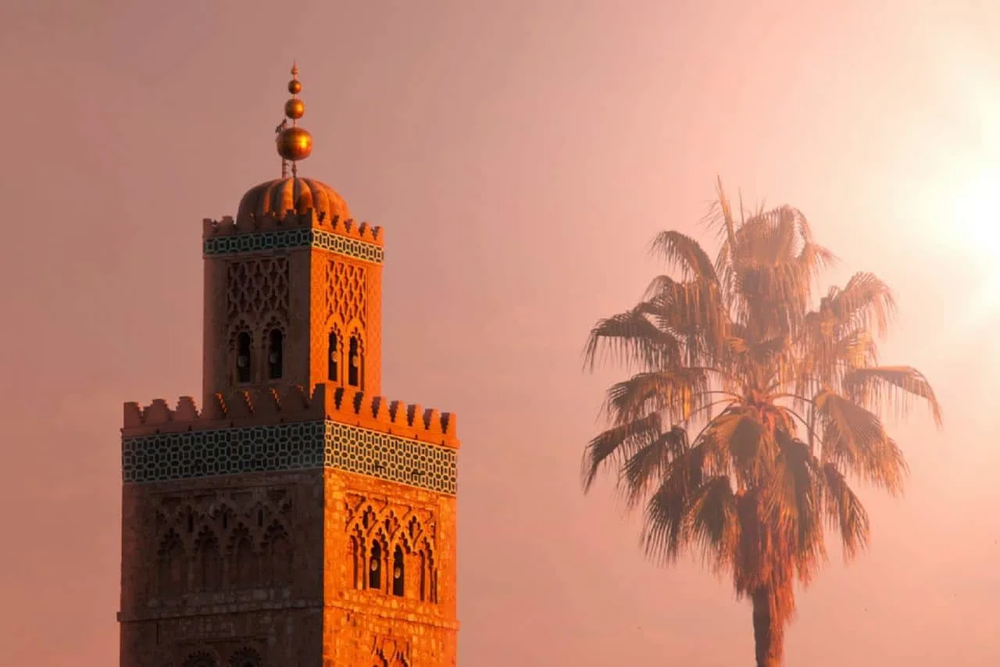
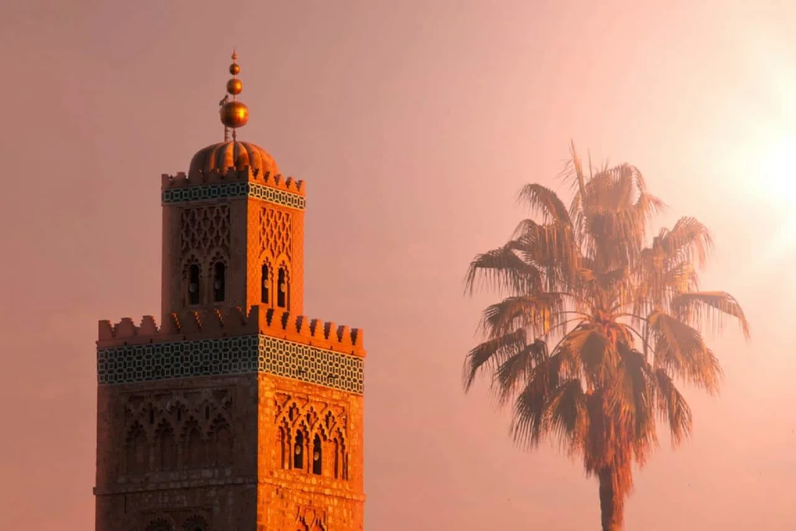

Souss Massa National Park Tour: Birdwatching Paradise & Wildlife Sanctuary
Spot flamingos & endangered bald ibis • 250+ bird species • Desert dunes & coastal ecosystems • Nature photography paradise
Why Choose Our Souss Massa National Park Birdwatching Tour
Discover Morocco's Premier Wildlife & Birdwatching Sanctuary
Escape to Souss Massa National Park - Morocco's most important biodiversity hotspot and birdwatcher's paradise! Located just 40km south of Agadir along the Atlantic coast, this 33,800-hectare protected area is home to over 250 bird species, rare wildlife, and stunning diverse ecosystems. From pink flamingo colonies to the critically endangered Northern Bald Ibis, this Souss Massa National Park tour offers unforgettable wildlife encounters.
This Agadir birdwatching tour takes you through one of North Africa's most important wetland reserves. The park protects five distinct ecosystems: coastal beaches, freshwater wetlands, Sahara-style sand dunes, acacia scrubland, and agricultural zones. Each habitat supports unique wildlife - flamingos wade in shallow lagoons, endangered bald ibis nest on coastal cliffs, spoonbills and herons fish in wetlands, and sandgrouse inhabit the desert dunes.
Souss Massa National Park is globally significant for conservation! It's one of only two remaining wild breeding sites for the Northern Bald Ibis (only ~500 individuals left worldwide). The park has successfully reintroduced locally extinct species including Scimitar-horned oryx, Dorcas gazelles, and addax antelope. Your visit directly supports these critical conservation efforts while offering you rare wildlife viewing opportunities found nowhere else on Earth.
What Makes This Souss Massa Wildlife Tour Special?
Unlike typical tourist activities, our Souss Massa National Park tour is designed specifically for nature lovers, birdwatchers, and wildlife photographers. Your expert naturalist guide is trained in ornithology and ecology, providing binoculars and spotting scopes for optimal bird viewing. We visit during optimal wildlife activity times (early morning) when birds are most active and lighting is perfect for photography.
Your specialized guide knows exactly where to find the park's star species - the best lagoons for flamingo photography, bald ibis nesting cliffs, osprey perches, and gazelle grazing areas. Learn about bird identification, migration patterns, conservation challenges, and the park's rewilding programs. The small group size (maximum 8 participants) ensures quiet observation essential for wildlife viewing - birds are sensitive to noise and large groups scare them away!
The Souss Massa National Park Agadir tour is perfect for birdwatchers, photographers, families who love nature, eco-tourists, and anyone wanting to experience Morocco's wild side. No birdwatching experience required - our guide teaches bird identification and makes it accessible for beginners while satisfying experienced birders with rare species sightings!
Detailed Itinerary: Your Birdwatching Adventure
Hotel Pickup in Agadir
Early morning pickup from your hotel in Agadir (exact time confirmed when booking). Meet your expert naturalist guide who provides an introduction to the park's ecosystems, target species, and what to expect. Receive binoculars if you don't have your own. Early start ensures optimal birdwatching - birds are most active at dawn!
Scenic Coastal Drive to Souss Massa
Enjoy a 40km drive south along the Atlantic coast toward Souss Massa National Park. Pass through small coastal villages and agricultural areas. Your guide explains the park's history, conservation programs, and the species you'll be seeking. Learn about the Northern Bald Ibis reintroduction project - one of the world's most successful endangered species recovery programs!
Wetlands & Lagoon - Flamingo Viewing
Arrive at the park's wetland area - home to spectacular flamingo colonies! Watch hundreds of greater flamingos feeding in shallow waters, their pink plumage glowing in morning light. Spot other wetland species: spoonbills with distinctive bills, grey herons stalking fish, glossy ibis, sandpipers, and terns. Your guide sets up the spotting scope for close-up views and helps identify species. Excellent photography opportunities - the flamingo reflections in still water are breathtaking! This area also attracts migratory species from Europe and sub-Saharan Africa.
Coastal Cliffs - Endangered Bald Ibis Habitat
Drive to the coastal cliff section - the crown jewel of Souss Massa! This is one of Earth's last two breeding sites for the critically endangered Northern Bald Ibis. Observe these rare, prehistoric-looking birds with their distinctive bald red heads and curved beaks. Watch them soar along cliffs, nest on ledges, and feed in nearby fields. Only ~500 individuals exist worldwide, and you're seeing them in their natural habitat! Also spot Barbary falcons, ravens, and seabirds. Your guide explains the intensive conservation efforts that saved this species from extinction.
Desert Dunes & Wildlife Viewing
Explore the park's Sahara-style sand dunes and acacia scrubland. Look for reintroduced Scimitar-horned oryx, Dorcas gazelles, and addax antelope grazing in the distance. Spot desert bird species like cream-colored coursers, sandgrouse, and larks. The contrasting landscapes - golden dunes meeting Atlantic ocean - create dramatic photo opportunities. Learn how the park maintains this fragile desert ecosystem and the challenges of wildlife reintroduction programs.
Return to Agadir
Begin the return journey to Agadir with your bird checklist and amazing wildlife sightings! Your guide provides final thoughts on conservation, answers questions, and recommends other nature sites in Morocco. Most tours see 40-60 bird species and multiple mammals - an incredible morning of wildlife viewing! Total tour duration: approximately 4 hours including round-trip transport.
✅ What's Included
- ✓ Hotel pickup and drop-off (Agadir area)
- ✓ Air-conditioned 4x4 transportation
- ✓ Expert naturalist/birding guide
- ✓ Binoculars provided (if needed)
- ✓ Spotting scope for close-up bird viewing
- ✓ Park entrance fees
- ✓ Bird checklist & identification guide
- ✓ Bottled water
- ✓ 4-hour guided wildlife tour
❌ What's Not Included
- ✗ Food/snacks (bring your own)
- ✗ Personal binoculars (provided if needed)
- ✗ Professional photography service
- ✗ Gratuities (optional, appreciated)
Essential Information for Your Birdwatching Tour
- Binoculars: If you own them (we provide if needed)
- Camera: Telephoto lens ideal for bird/wildlife photography
- Comfortable clothes: Neutral colors (browns, greens, tans) - avoid bright colors that scare birds
- Walking shoes: Closed-toe shoes for easy trails (not hiking boots needed)
- Sun protection: Hat, sunglasses, SPF 50+ sunscreen
- Snacks & water: Light refreshments for the morning (breakfast beforehand recommended)
- Field guide (optional): Bird book if you're an avid birder
- Best season: Oct-April for migr atory birds; year-round for residents like bald ibis & flamingos
- Difficulty level: Easy - minimal walking, mostly observation from vehicle and viewing points
- Birdwatching experience: Not required! Perfect for beginners and experienced birders alike
- Early start: 7:00 AM pickup essential - birds most active at dawn
- Wildlife guarantee: Flamingos & bald ibis seen 95% of tours; other species vary by season
- Group size: Maximum 8 people ensures quiet for better wildlife viewing
- Age suitability: Great for families with kids 6+ who enjoy nature/animals
- Free cancellation: Cancel up to 24 hours before for full refund
- Languages: Guides speak English and French
- Early morning light is magical for photography - bring your camera!
- Wear muted colors (browns, greens) - bright colors scare birds away
- Move slowly and quietly near bird areas - patience is rewarded
- Flamingos are best photographed with water reflections in calm conditions
- Bald ibis are easier to spot in the afternoon when they return to cliffs
- Bring a bird field guide if you're serious about identification
- Spring (March-May) best for migratory species diversity
- Winter (Nov-Feb) brings European migrants escaping cold weather
Wildlife & Birds You'll See at Souss Massa National Park
Souss Massa National Park is home to incredible biodiversity across multiple ecosystems:
ü¶© Signature Bird Species
Northern Bald Ibis (Critically Endangered): The park's most famous resident! Only ~500 exist worldwide, and Souss Massa is one of two remaining breeding sites. These distinctive birds have bald red heads, long curved beaks, and bronze-green plumage. See them nesting on coastal cliffs and feeding in fields. Greater Flamingos: Hundreds of pink flamingos wade in shallow lagoons, filter-feeding for algae and small organisms. Stunning in flight and incredible for photography. Spoonbills, Herons & Egrets: Multiple species including grey herons, little egrets, and Eurasian spoonbills with their unique spatula-shaped bills.
ü¶Ö Raptors & Birds of Prey
Spot impressive predators: Barbary falcons hunting along cliffs, ospreys diving for fish in wetlands, marsh harriers soaring over reed beds, and various eagle species. Morocco has exceptional raptor diversity and Souss Massa is prime territory. Your guide helps identify flight patterns and behaviors!
ü¶å Mammals & Larger Wildlife
The park's rewilding program has reintroduced: Scimitar-horned Oryx (extinct in wild, reintroduced here), Dorcas Gazelles (graceful desert antelopes), Addax (white desert antelope), wild boars, jackals, red foxes, and endangered Cuvier's gazelle. Spotting these requires patience and luck - your guide knows their habitats and patterns!
üì∏ Photography Opportunities
Souss Massa is a photographer's paradise! Capture flamingo flocks against blue skies, bald ibis in flight, desert dunes meeting ocean, sunrise over wetlands, and diverse landscapes. The golden hour lighting creates spectacular conditions for wildlife and nature photography. Your guide positions you for optimal shots and uses the spotting scope to preview compositions!
üåç Conservation & Eco-Tourism
Learn about Morocco's conservation success stories! The park rescued the Northern Bald Ibis from near-extinction, reintroduced locally extinct mammals, and protects critical wetland habitats. Your visit supports these efforts - park fees fund conservation programs, anti-poaching patrols, and community education initiatives. This is eco-tourism at its finest!
Planning Your Birdwatching Tour to Souss Massa
Best Time for Birdwatching at Souss Massa
Souss Massa National Park offers excellent year-round birdwatching, with seasonal highlights:
- Spring (March-May): Peak migration! European birds arriving, nesting activity, flamingo breeding displays. Most species diversity - 150+ species possible!
- Summer (June-August): Resident species & summer migrants, bald ibis chicks fledging, hot but flamingos always present
- Fall (September-November): Autumn migration brings diverse species, cooler weather perfect for birding, excellent photography light
- Winter (December-February): Best season! European migrants escaping winter, huge bird numbers, comfortable temperatures, flamingo spectacle
Where is Souss Massa National Park?
Souss Massa National Park is located 40km south of Agadir along the Atlantic coast (not north like Paradise Valley!). The park stretches 65km along the coastline between Agadir and Tiznit. We visit the northern section closest to Agadir, which has the best wetlands, bald ibis colony, and visitor facilities. The drive takes about 35-40 minutes from central Agadir through coastal villages and agricultural lands.
Why Book a Birding Guide vs. Independent Visit?
Independent visiting is challenging - our specialized birding tour offers huge advantages:
- Expert bird identification: Guide knows all 250+ species by sight and sound - teaches you field marks
- Find rare species: Guide knows exactly where bald ibis nest, flamingos feed, and ospreys perch
- Equipment provided: Binoculars and spotting scopes for close-up viewing
- Optimal timing: Early morning arrival when birds are most active and visible
- Small group advantage: Quiet observation essential for wildlife - large groups scare birds away
- Conservation insights: Learn about reintroduction programs and endangered species protection
- Access to best areas: Guide knows current birding hotspots within the huge park
- Efficient 4-hour tour: See maximum wildlife in limited time vs. wandering aimlessly
Frequently Asked Questions About Souss Massa Birdwatching Tour
No experience necessary! Our Souss Massa tour is perfect for beginners and experienced birders. Your guide teaches bird identification using field marks, behaviors, and calls. We provide binoculars and spotting scopes. Beginners learn basics while experienced birders tick off rare species like bald ibis. Everyone enjoys it!
Flamingos are seen on 95%+ of tours - they're resident year-round in the wetlands. Northern Bald Ibis are also highly likely (90%+ sightings) as they nest in the coastal cliffs. Your guide knows their habitats intimately and times visits for optimal viewing. Other species vary by season and luck, but these two icons are almost guaranteed!
Birds are most active at dawn! Early morning is when they feed, call, and move around - perfect for observation. By 10 AM many birds rest in shade and become harder to spot. The early light also creates stunning photography conditions. Yes, it's early, but serious birders know dawn is golden hour for wildlife viewing!
Yes, for nature-loving kids aged 6+! Children who enjoy animals, birds, and nature will love spotting flamingos and learning about endangered species. It's educational and engaging. However, it requires patience and quiet observation - very active kids who can't stay quiet might struggle. Many families find it a wonderful educational experience!
Most tours see 40-60 bird species in the 4-hour visit! In peak migration (March-May, September-November) you might see 80+ species. The park has recorded over 250 species total, but daily sightings depend on season, weather, and luck. Your guide keeps a checklist and helps identify everything you see!
Please do! If you have quality binoculars, bring them. Telephoto camera lenses (300mm+) are ideal for bird photography. We provide binoculars for those who don't have them, plus a spotting scope for the group. Bring extra camera batteries - you'll be shooting a lot!
Minimal walking! This isn't a hiking tour - we drive between viewing areas and walk short distances to observation points. Total walking is maybe 30-40 minutes cumulative on easy, flat terrain. Perfect for those who want wildlife viewing without strenuous hiking. Suitable for most fitness levels!
Light rain actually enhances birdwatching - birds are often more active! However, heavy rain reduces visibility. If weather is severe, we'll reschedule at no charge. Agadir has 300+ sunny days annually, so rain is rare. Wind can affect bird activity but flamingos and resident species are still visible.
Yes! The tour finishes around 11 AM, leaving your afternoon free. Perfect to combine with: Paradise Valley (swimming & relaxation), Agadir city tour, afternoon beach time, or sunset camel ride. Many birders combine this with coastal birdwatching at other sites. Ask about package deals!
What Birdwatchers Say About Souss Massa Tour
110 verified reviews
"As an avid birder, this Souss Massa tour exceeded expectations! Saw the endangered bald ibis - only ~500 left worldwide! Hundreds of flamingos, ospreys fishing, and 47 species total. Our guide Hassan was an expert ornithologist who knew every call and behavior. The spotting scope was perfect for detailed viewing. Absolute must for birders visiting Morocco!"
"Wonderful nature experience! Not a hardcore birder but loved seeing flamingos in the wild - so many of them! The bald ibis were fascinating - our guide explained the conservation efforts to save them. Kids (ages 8 & 10) enjoyed spotting different birds and gazelles. Educational and beautiful. Great half-day activity from Agadir."
"Excellent birdwatching! Spring migration was in full swing - saw 63 species including rare sandgrouse and coursers in the dunes. Flamingos were spectacular. The guide's knowledge of bird behavior and habitats was impressive. Early morning start was worth it - birds everywhere! Bring a telephoto lens - photography opportunities are incredible!"
"Amazing wildlife tour! Seeing the critically endangered bald ibis was a life highlight - they're so rare and this is one of the last places to see them wild. The flamingo colony was massive and beautiful. Guide provided binoculars and was patient teaching us bird identification. Perfect for nature lovers - not just hard-core birders!"
"Great birding experience! The diversity of ecosystems - wetlands, dunes, cliffs - means varied bird species. Spotted gazelles too! The Northern Bald Ibis are incredible up close through the scope. Guide was very knowledgeable about conservation. Only 4 hours but saw so much wildlife. Good value for serious birders and casual nature lovers alike."
Why Book Souss Massa Birdwatching with The Local Guide?
- üèÜ Expert Naturalist Guides: Trained in ornithology & ecology - not just general tour guides. Know all 250+ species!
- üë• Small Groups: Maximum 8 people ensures quiet observation and better wildlife sightings
- ⭐ Top-Rated: 4.6/5 rating from 110+ verified birders and nature lovers
- üí∞ Equipment Included: Binoculars, spotting scope, bird checklist - ‚Ǩ40 all-inclusive!
- üöó Early Morning Pickup: 7 AM start ensures optimal birding when species are most active
- ü¶© 90%+ Success Rate: See flamingos & bald ibis on almost every tour - guide knows exact locations
- üìÖ Daily Tours: Available every day year-round - instant WhatsApp confirmation
- üîÑ Free Cancellation: Cancel up to 24 hours before for full refund ‚Äì book with confidence
- üåç Conservation Focused: Your visit supports endangered species protection and habitat preservation
Other Popular Agadir Nature & Adventure Tours
Combine your morning birdwatching with these afternoon activities:
üèûÔ∏è Paradise Valley
After morning birding, cool off at Paradise Valley - natural pools & palm groves perfect for swimming & relaxation.
üê´ Sunset Camel Ride
Finish your day with a romantic camel ride along Agadir beach at sunset - perfect nature-filled day!
üè∞ Essaouira Day Trip
Visit coastal Essaouira - UNESCO city with great coastal birdwatching opportunities & fresh seafood.
üèôÔ∏è Agadir City Tour
Explore Agadir's Kasbah, marina, and Souk El Had market in the afternoon after your birding tour.
Ready to See Endangered Bald Ibis & Flamingos?
Book your Souss Massa National Park birdwatching tour and witness Morocco's incredible wildlife!